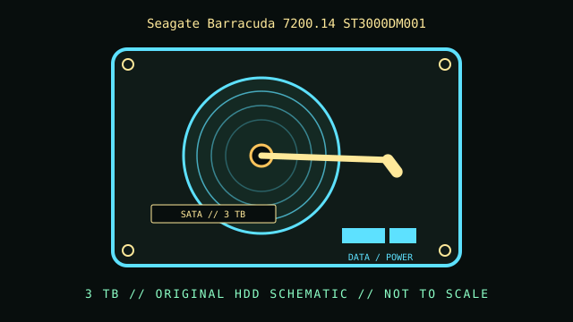

[ INDIVIDUAL COMPONENT // HARD DISK DRIVES ]
Seagate Barracuda 7200.14 ST3000DM001
Barracuda 7200.14 3 TB desktop model, a rotating-platter magnetic storage device. This record describes the complete catalog identity shown above; related models, suffixes, capacities, firmware, and revisions can have different specifications.

IDENTIFICATION: Match the entire model and suffix printed on the drive label. These are mechanical hard drives (HDDs), not solid-state drives; the record does not imply the health or condition of a particular used unit.
Part specifications
| Catalog subcategory | SATA desktop drives |
|---|---|
| Catalog identity | Seagate Barracuda 7200.14 ST3000DM001 |
| Product family | Barracuda 7200.14 3 TB desktop model |
| Form factor | 3.5-inch desktop; standard desktop bay and mounting clearance still must be checked against the enclosure. |
| Interface | SATA 6 Gb/s (SATA III). SATA generations negotiate a supported common link rate; this is not a SAS drive. |
| Capacity / speed / cache | 3 TB; 7200 RPM; 64 MB cache. Nominal marketed capacity uses decimal units; the operating system reports formatted capacity differently. |
| Sector / recording details | 512e Advanced Format; confirm sector reporting and firmware on the individual drive. Recording method, logical sector size, and firmware revision should be checked against the cited model documentation and the actual device. |
| Compatibility | Use a SATA data connection and suitable drive power. Confirm that the motherboard/controller, BIOS/UEFI, operating system, enclosure, and partitioning scheme support this model and capacity. Do not connect directly to a SAS-only cable/backplane assumption without checking host support. |
Compatibility and deployment
This is a 3.5-inch SATA magnetic drive. Check physical bay fit, SATA data cabling, and the correct SATA power connector; a SATA port or cable does not establish that the drive is healthy. For capacities above 2 TB, use a GPT-partitioned disk and an operating system/controller stack that supports the full address range. Installations that must boot from the drive additionally depend on firmware and operating-system boot-mode support.
For a preserved system, record the host chipset, controller mode, OS version, logical/physical sector sizes, and the drive firmware revision. A bridge enclosure can hide or translate device details and may not expose every capacity, sector, or diagnostic feature.
Handling, service & preservation
- Keep the label, full model, serial number, firmware, SMART report, and acquisition/test dates together in the collection record.
- Use SMART and vendor self-tests as diagnostic evidence, not a guarantee of future operation. If read errors, abnormal sounds, or repeated spin-up occur, stop unnecessary retries and preserve a verified copy.
- Do not open an HDD outside a qualified clean environment. Dust, impact, vibration, and uncontrolled power cycling can worsen mechanical damage.
- For long-term storage, maintain independent verified copies, record checksums and read errors, and periodically check stored media.
Model-specific sources
- Seagate Barracuda 7200.14 Product Manual (covers ST3000DM001)Manufacturer manual identifies the exact ST3000DM001 model and its operating specifications.
- Seagate Barracuda desktop-drive supportManufacturer troubleshooting and support context for the Barracuda desktop HDD family.
- SATA-IO official interface organizationInterface reference for the SATA host/device ecosystem; it does not replace model-specific drive specifications.
Specifications are transcribed for the exact model where the cited manufacturer documentation provides them. Check the original document revision and the drive's reported identity before compatibility or preservation work.